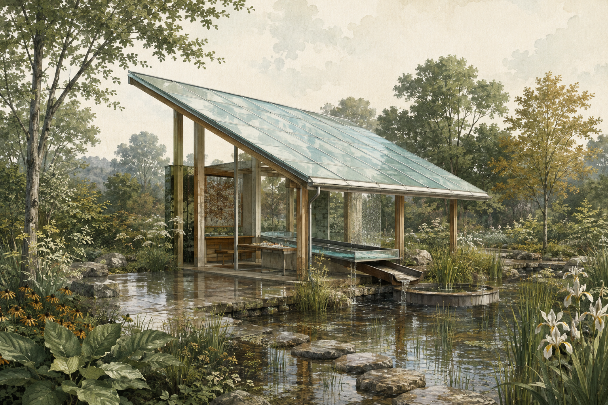
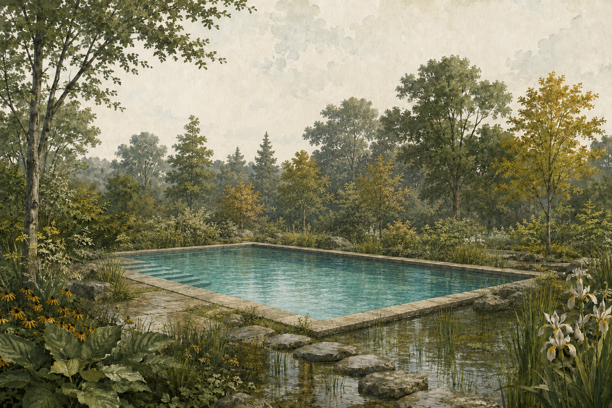

原图与游泳池编辑版均由内置 ImageGen 实际生成并保存。AI 概念插画，不是现场照片或施工图；素材来源、上一版琥珀屋顶图和生成提示词保存在作品文件中。
你圈选的亭子已改为林间游泳池。原图、选区和对照位置均保留；选择“编辑版本”查看新结果，或拖动对照线比较。还可以圈出下一个想修改的区域。


原图与游泳池编辑版均由内置 ImageGen 实际生成并保存。AI 概念插画，不是现场照片或施工图；素材来源、上一版琥珀屋顶图和生成提示词保存在作品文件中。